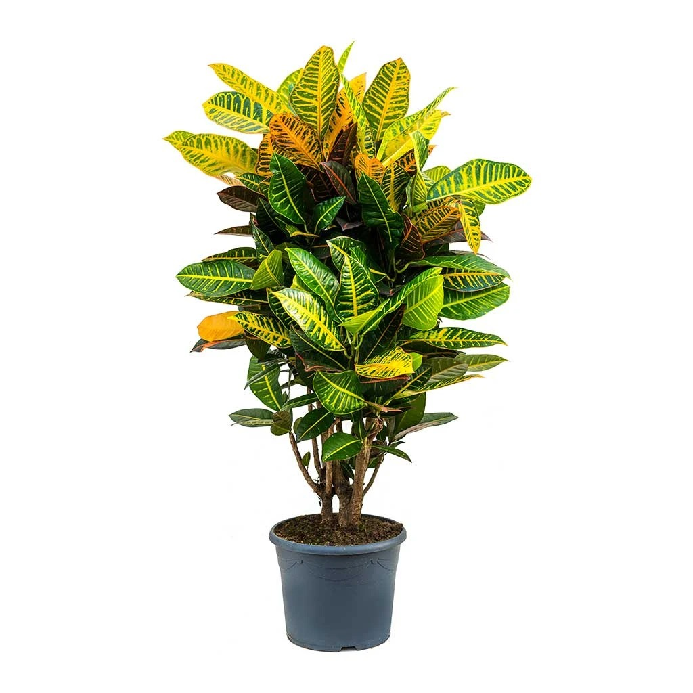
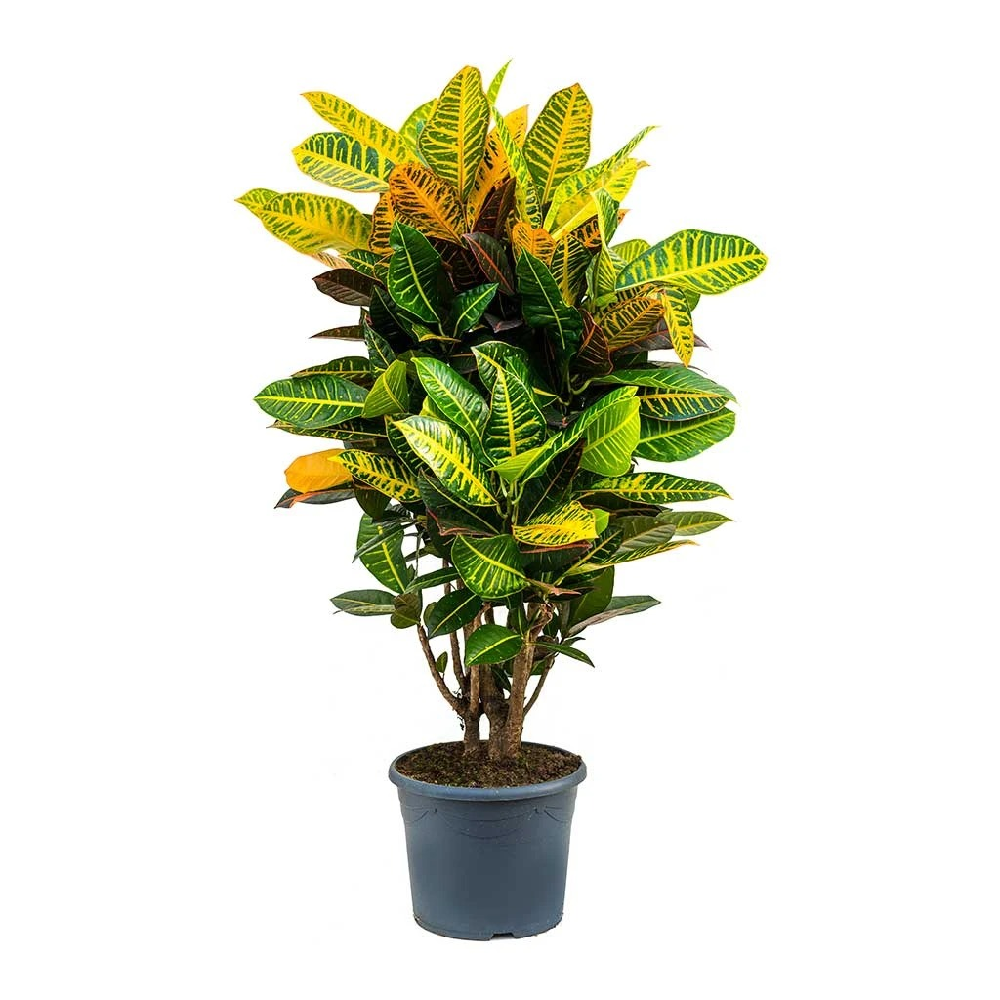

A List Of Plants I Own
By Kamalani Earley
-
Pothos
- A thick leaved plant that is often used in beginner propogation. This is a tropical plant that prefers it warm and frequent watering.
-
Lemon-Button Fern
- A delicate tropical fern that requires a stable tempurature to thrive. Once full grown it will spread out and become quite large.
-
Money Tree
- Grows up to three feet tall with arrow shaped leaves, does well with minimal watering. Does require pruning once it gets to a large size.
-
Bromeliad
- Blooms last around six weeks beffore they fall off. ONce they do small pups will begin to sprout around the mother-plant. Hollow inside must be filled with water at all times, or the plant will dry out.
-
Croton
- A large yellow splotched plant that does well with regular but not excessive watering. Does require high light.
-
Monstera Plant
- A tall plant with large split leaves, this is also another commonly used plant in propogation.
-
Peace Lily
- A large plant with dark green leaves and large white flowers. Can be grown with roots submerged in water.


 

 About Me
About Me